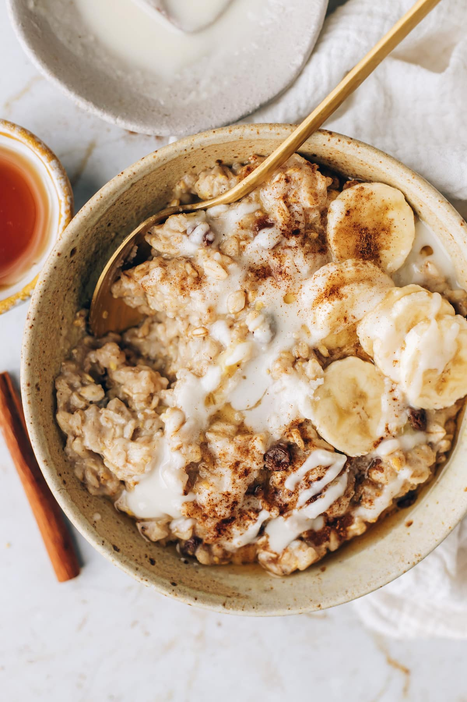

Oatmeal porridge of your dreams

Description
A great basic breakfast, or a very quick lunch, both at home or at the office - as long as you have access to a microwave!
Ingredients
- 2dl of oats
- 3dl water or milk
- Pinch of salt
- Something to put on your oatmeal!
- If you're feeling american, add peanut butter and sliced bananas.
- If you want protein, add some protein powder when making the porridge
- Some milk and berries or fruit is great.
- A fat slab of butter in it and raisins tastes awesome
- Experiment!
Steps
- Pour in the oats into a bowl or a soup-plate
- Pour in the water
- Add the salt
- Mix it a bit
- Put the bowl into the microwave, turn it on full blast for 2 minutes
- Take out the porridge
- Add whatever you like on your oatmeal!